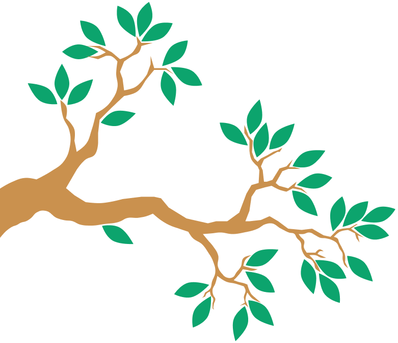
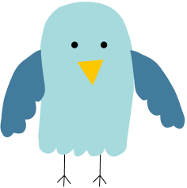

<section class="start section">
  <div class="start__images">
    
    
    <div class="start__music-notes">
      <div class="start__music-note1">&#9833</div>
      <div class="start__music-note2">&#9835; &#9834</div>
      <div class="start__music-note3">&#9834</div>
    </div>
  </div>
  <div class="start__wrapper">
      <span class="start__text">Любите пение птичек в любое время суток? </br>
        Считаете себя знатоком птичьих звонких рулад? </br>
        Просто скучаете и не знаете, как занять время? </br>
        Тогда добро пожаловать в увлекательный мир Songbird! </br>
        Давайте проверим, с какой ноты вы сможете угадать мелодию :)</span>
      </span>
    <button class="start__button">Играть</button>
  </div>
</section>